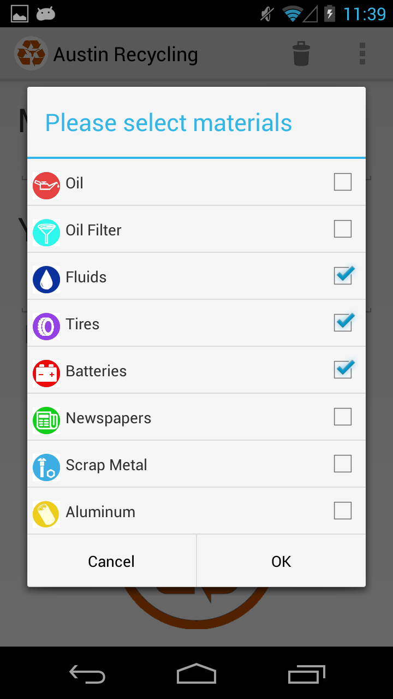
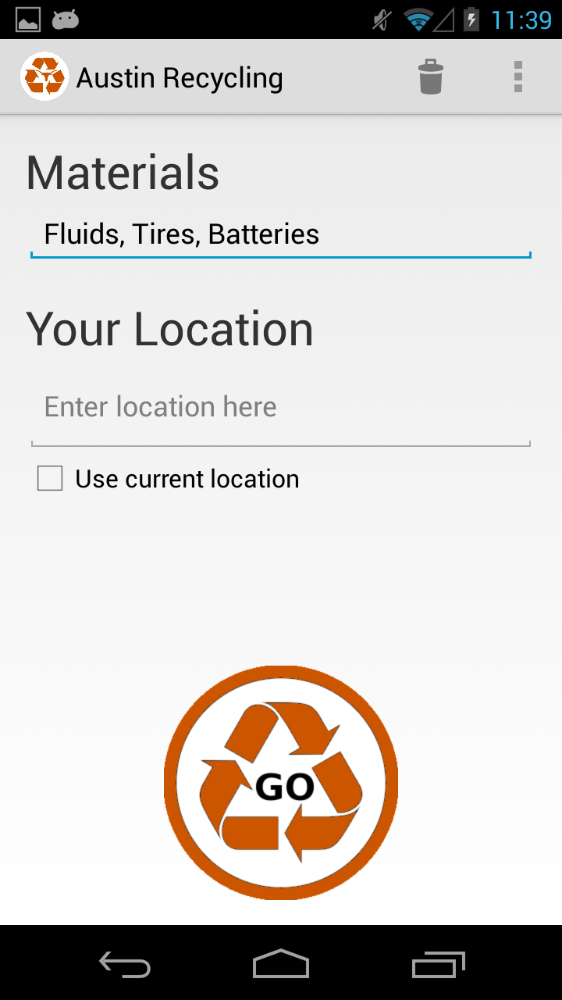
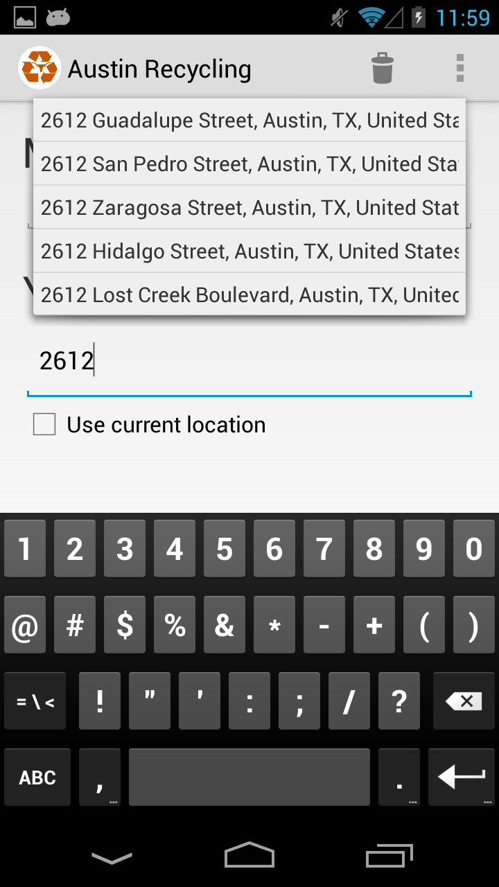
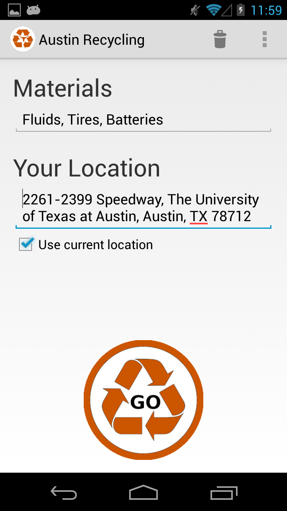
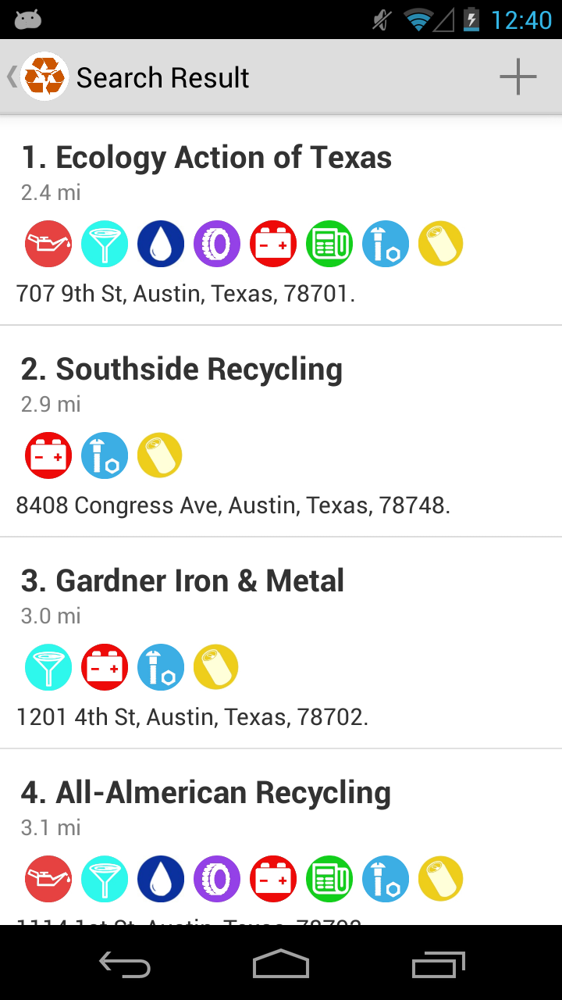
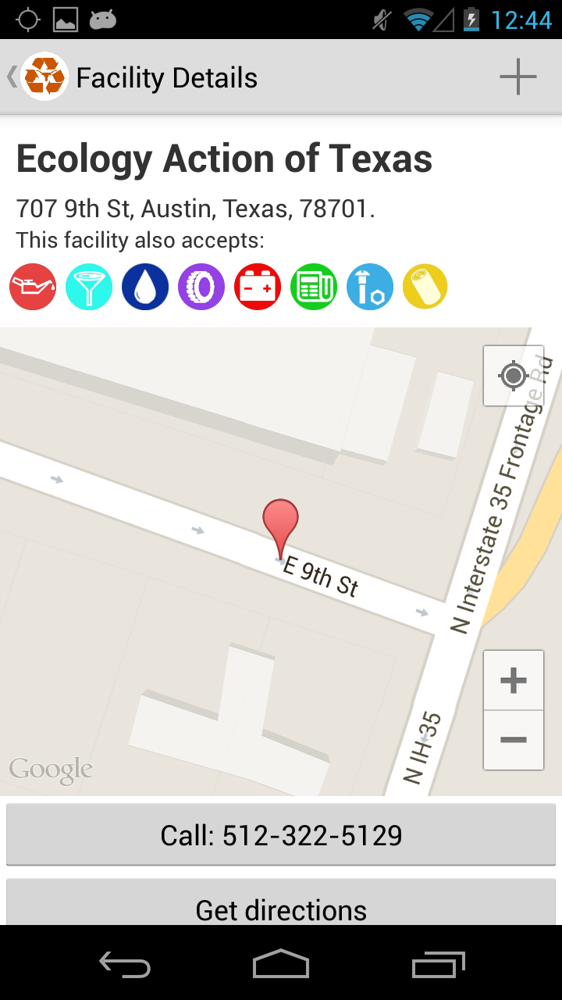

Welcome to Austin Recycling Pages.
Austin Recycling is an Android application that allows you to choose the materials that you want to recycle and the application will search all the locations that can process your materials.
Features
- Material selection implements checkboxes that save state.
- Use Current Location" checkbox on Search Activity to use Location services instead of manually entering an address.
- Result list of facilities is sorted by distance from the user
- Display each facility's distance from the user in the results list.
- Show all materials accepted by the facility on the Result List and Detail Activities.
- Show the location of the facility on a map.
- Button that can call the facility.
- Button that opens up Google Maps for turn by turn navigation.
Screenshots
Select material(s) that you want to recycle ↓
Selected material(s) shows up in text field ↓
Places AutoComplete by Google ↓
Get current location of the device ↓
Search results sorted based on distance ↓
Detailed information about facility ↓
Authors and Contributors
(@domoench) David Moench
(@michaelhsu53) Chan-Tang Hsu
(@aelx311) Alex Ng Dehe.